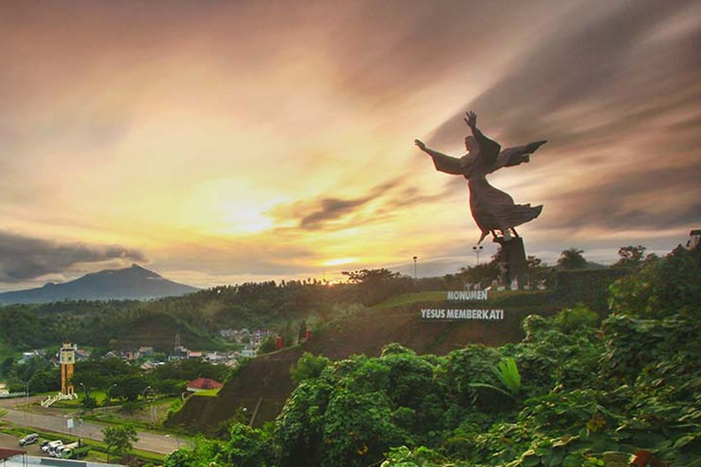
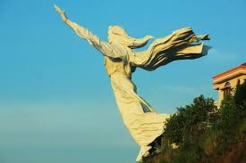
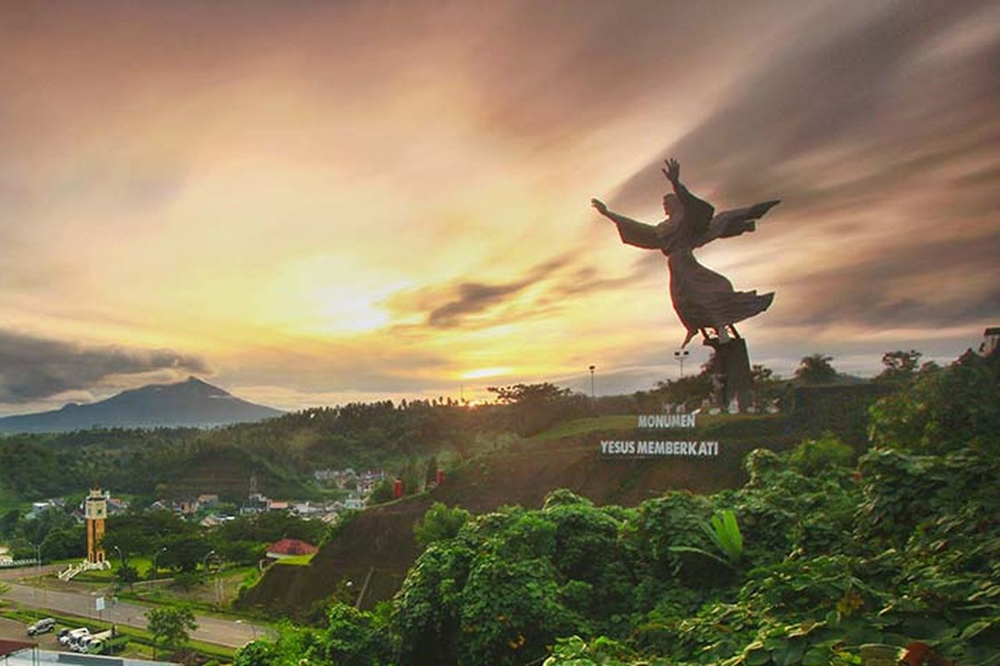
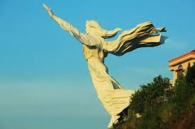

Patung Yesus Memberkati adalah salah satu landmark ikonik di Manado.
Dengan tinggi 50 meter, patung ini merupakan salah satu patung Yesus tertinggi di dunia. Berdiri di atas bukit, patung ini seolah-olah sedang memberkati seluruh kota Manado.
Tempat ini menjadi destinasi populer bagi pengunjung yang ingin berfoto, menikmati pemandangan kota, atau mencari suasana yang tenang.